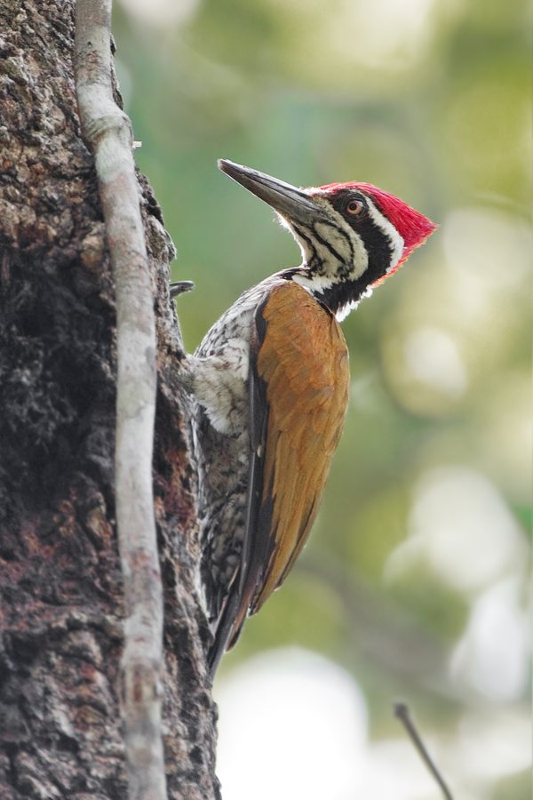

ग्रेटर फ्लेमबैकGreater Flameback
Chrysocolaptes guttacristatus · Picidae · BRD-0318

- Scientific name वैज्ञानिक नाम
- Chrysocolaptes guttacristatus (Tickell, 1833)
- Family कुल
- Picidae
- Hindi हिंदी
- ग्रेटर फ्लेमबैक
- Local names स्थानीय नाम
- greater flameback
- Status here यहाँ की स्थिति
- native
- Movement आवागमन
- Resident, here all year
- Known from कहाँ दर्ज
- Others have published records from the Basti–Ayodhya districts बस्ती–अयोध्या के ज़िलों से दूसरों के प्रकाशित अभिलेख
- IUCN IUCN
- LC
- Review समीक्षा
- not yet reviewed
When to look कब देखें
Present all year. साल भर मौजूद।
Tell it apart from इनसे अलग पहचानें
ग्रेटर फ्लेमबैक / Greater Flameback
Chrysocolaptes guttacristatus (Tickell, 1833) — Picidae
ग्रेटर फ्लेमबैक — तराई और साल के जंगलों में रहने वाला एक अत्यंत सुंदर, बड़े आकार का सुनहरी पीठ वाला कठफोड़वा है। इसकी पीठ और पंखों पर गहरा सुनहरा-पीला और नारंगी रंग चमकता है, सिर पर पूरी तरह लाल शिखा (कलगी) होती है, और चेहरे पर काली-सफेद धारियां होती हैं। इसकी गर्दन के अगले हिस्से पर काली धारियों का एक जटिल जाल होता है और निचला सीना सफेद तथा काले किनारों से सजा होता है। यह बड़े पेड़ों के तनों पर तेजी से ऊपर चढ़ते हुए तीखी हंसी जैसी 'किक-किक-किक' आवाज निकालता है।
Quick Identification त्वरित पहचान
| Feature | Description |
|---|---|
| Habit | Large, active arboreal woodpecker foraging on boles of tall forest trees |
| Mantle | Bright golden-yellow to deep fiery orange-red on upper back and wings |
| Crown and Crest | Entirely bright crimson-red in male; black spotted with white in female |
| Face | White with multiple black stripes: dark line through eye and parallel malar line |
| Hindneck | Prominent clean white stripe extending down the nape and hindneck |
| Bill | Long, heavy, straight, pointed; dark slaty-brown to blackish |
| Breast Pattern | White or buffy feathers broadly bordered with black, forming scaled appearance |
Field tip: Look for a large golden-backed woodpecker on mature tree trunks. The prominent white nape stripe, clean crimson crest in the male (or white-spotted black crest in the female), and scaled black-and-white breast distinguish it from the commoner three-toed flamebacks.
हिंदी:
इसकी पीठ सुनहरी-पीली और नारंगी होती है तथा नर के सिर पर पूरी तरह लाल कलगी होती है।
मादा के सिर पर काले रंग की कलगी होती है जिस पर सफेद गोल बूंदें बनी होती हैं।
इसके सीने पर सफेद पंखों के किनारे काले होते हैं जिससे तराजू के छिलकों जैसी बनावट दिखती है।
Morphology आकारिकी
Measurements as given by Baker (1927 as Chrysocolaptes guttacristatus):
| Measurement | Range |
|---|---|
| Wing | 172–190 mm (Baker 1927) |
The Greater Flameback is a robust, large woodpecker with vivid plumage and a strong straight bill. In adult males, the forehead, crown, and elongated crest are brilliant crimson-red. A clean white stripe runs from above the eye down the side of the neck, bordered below by a dark eye-stripe.
The mantle, scapulars, and wing-coverts are rich golden-olive shading into bright fiery golden-yellow or orange-crimson. The lower back and rump are brilliant crimson-red. The tail is black.
In adult females, the crimson crest is replaced by a jet-black crown and crest densely spangled with small, clear white rounded spots.
The throat is whitish, bounded on either side by a double black line that encloses a pale central stripe. The breast feathers are creamy-white, broadly margined with black, producing a striking scaled or scalloped pattern.
The bill is long, stout, and chisel-tipped, slaty-black. The iris is creamy-white to pale yellow. The feet are zygodactyl with four toes and long curved claws.
Vocalisations. A loud, high-pitched, ringing laughing whinny or trill uttered both in flight and when perched, louder and more metallic than that of Dinopium.
हिंदी:
इसके पंखों की लंबाई 172 से 190 मिमी होती है।
इसकी पीठ और कमर पर गहरा लाल और सुनहरा पीला रंग होता है।
इसकी लंबी और मजबूत चोंच सलेटी-काली होती है और पैर मजबूत पंजों वाले होते हैं।
Behaviour & Ecology व्यवहार और पारिस्थितिकी
Chrysocolaptes guttacristatus is an active and vocal bird found in pairs or small family groups. It works its way methodically up large trunks and thick lateral limbs, hopping vigorously upward and hitching sideways around the circumference of the bole to inspect bark crevices.
When moving between distant trees, its flight is deeply bounding and undulating, consisting of a rapid flurry of noisy wingbeats followed by a closed-wing glide with noticeable loss of altitude. It frequently joins mixed foraging flocks, communicating with loud metallic calls and energetic drumming on resonant dead branches.
हिंदी:
यह जोड़ों में रहता है और बड़े पेड़ों के तनों पर चारों तरफ घूम-घूमकर छाल में कीड़े ढूंढता है।
यह एक पेड़ से दूसरे पेड़ तक लहरदार उड़ान में उड़ता है।
Life Cycle / Phenology जीवन चक्र
Baker (1927, p. 79) records that in Assam it lays during March, April and May. The nest hole is excavated in a tree trunk at a moderate height from the ground, with both sexes sharing incubation and brood care in the unlined wood chamber.
हिंदी:
बेकर (1927) के अनुसार असम में यह मार्च, अप्रैल और मई में अंडे देता है। यह पेड़ के तने में जमीन से कुछ ऊंचाई पर खोखल खोदकर अंडे देता है। नर और मादा दोनों मिलकर बच्चों की देखभाल करते हैं।
Host Plants or Prey आहार
The Greater Flameback is an insectivorous specialist focused on bark-dwelling and wood-boring arthropods:
- Larvae of longhorn beetles (Cerambycidae) and jewel beetles (Buprestidae)
- Wood-nesting ants and termites exposed by stripping dead bark
- Caterpillars, spiders, and centipedes hiding in deep fissures
- Sap from wounded tree trunks and occasional ripe wild figs
- Flower nectar from blooming Bombax ceiba and Butea monosperma trees
It uses its heavy bill to chisel away bark flakes and chips, inserting its long, sticky, barbed tongue into deep boreholes to extract grubs.
हिंदी:
यह पेड़ों की छाल के नीचे छिपे भृंगों के डिंभ, दीमक और चींटियों को खाता है।
यह सेमल और पलाश के फूलों से मकरंद भी चूसता है।
Predators / Natural Enemies शत्रु
Raptors, owls, and tree-climbing carnivores take birds of this size or raid tree cavities. No source opened for this atlas names a specific predator of this species.
हिंदी:
शिकारी पक्षी, उल्लू और पेड़ों पर चढ़ने वाले मांसाहारी जानवर इस आकार के पक्षियों का शिकार करते हैं या घोंसलों पर हमला करते हैं। इस एटलस के लिए देखे गए किसी स्रोत में इसके किसी विशिष्ट शिकारी का नाम दर्ज नहीं है।
Agricultural / Human Relevance कृषि प्रासंगिकता
The Greater Flameback is insectivorous, feeding on wood-boring larvae, ants, and termites on tree trunks, and visiting ground flights of termites (Baker 1927, p. 80). It is protected under the Wildlife (Protection) Act, 1972.
हिंदी:
ग्रेटर फ्लेमबैक कीटभक्षी पक्षी है, जो पेड़ों के तनों से काष्ठभक्षी डिंभ, चींटियों और दीमकों को खाता है (बेकर 1927)। यह वन्यजीव (संरक्षण) अधिनियम, 1972 के तहत संरक्षित है।
Expected Locally स्थानीय रूप से अपेक्षित
Not a field record. Written from published accounts for eastern Uttar Pradesh. No confirmed local sighting yet — if you have seen it, that is what the atlas needs.
अभी तक स्थानीय पुष्टि नहीं। यह विवरण प्रकाशित स्रोतों से है, किसी अवलोकन से नहीं।
Look on the trunks of mature sal, teak, and mango trees in dense woodland tracts and reserved forests across the district.
GBIF holds published records from these districts.
A first record would be a photograph of the bird with place and date, sent through the About page.
Distribution वितरण
Global range: Resident across the Indian subcontinent, southwestern China, Myanmar, Thailand, Indochina, and the Malay Peninsula.
Regional status: Resident in mature moist deciduous and sal forest tracts of northern Uttar Pradesh, including Dudhwa, Katarniaghat, Sohelwa, and adjacent riverine forests.
हिंदी:
यह भारत, नेपाल, म्यांमार और दक्षिण-पूर्व एशिया के घने जंगलों में पाया जाने वाला स्थायी निवासी है।
Research Questions शोध प्रश्न
- How do Chrysocolaptes guttacristatus and Dinopium benghalense partition foraging niches when co-occurring in fragmented sal woodlands? / एक ही जंगल में रहते हुए ग्रेटर फ्लेमबैक और सामान्य कठफोड़वा अपने भोजन का बंटवारा कैसे करते हैं?
- What are the key architectural features of tree snags preferred for cavity excavation in managed forest blocks? / घोंसले के लिए खोखल बनाने हेतु यह किस प्रकार के सूखे या कमजोर तनों को प्राथमिकता देता है?
- What is the frequency of sap-feeding behavior on native tree species outside the insect breeding season?
- How do road widening projects and removal of roadside avenue trees affect movement corridors between isolated forest patches?
- Can community acoustic data help map drumming territories to assess breeding densities across eastern Uttar Pradesh? (Field recordings of drumming cadences can distinguish flameback species.)
Similar Species मिलती-जुलती प्रजातियाँ
| Species | How to tell apart | हिंदी | |
|---|---|---|---|
| [[black_rumped_flameback\ | Black-rumped Flameback]] (Dinopium benghalense) | Smaller; black lower back and rump; throat heavily barred black and white; three forward toes; female has black forecrown | कठफोड़वा |
| [[himalayan_flameback\ | Himalayan Flameback]] (Dinopium shorii) | Smaller size; yellowish-olive mantle; lacks clean white hindneck stripe; three toes; female has brownish crest | हिमालयी कठफोड़वा |
Field rule: The combination of four toes, a brilliant red lower back and rump, clean white hindneck stripe, and boldly scaled breast pattern distinguishes the Greater Flameback from three-toed flamebacks.
हिंदी:
सामान्य कठफोड़वे की पीठ का निचला हिस्सा (कमर) काला होता है और उसके पैर में तीन अंगुलियां होती हैं जबकि इसकी कमर लाल होती है।
Taxonomy & Classification वर्गीकरण
Original description. Described by Samuel Richard Tickell in 1833 in the Journal of the Asiatic Society of Bengal (vol. 2, p. 678), under the basionym "Picus guttacristatus". Formerly placed under Chrysocolaptes guttacristatus by Baker (1927).
Subspecies. Multiple subspecies are recognized; northern Indian populations belong to Chrysocolaptes guttacristatus sultaneus (Eyton, 1845).
Family and order placement. Order Piciformes; family Picidae (woodpeckers).
IUCN status rationale. Evaluated as Least Concern (LC) by the IUCN Red List due to an extremely wide geographical range across South and Southeast Asia and extensive suitable habitat.
हिंदी:
टिकल ने 1833 में इसका वर्णन किया था। यह पिसिडे कुल का सदस्य है और प्रकृति संरक्षण में सुरक्षित माना जाता है।
Photo Gallery फोटो गैलरी
No photos yet — add field photos to media/species/greater_flameback/ and run node scripts/sync_photos.js.
Photos needed आवश्यक फोटो
- [ ] Adult male perched vertically on sal tree trunk (साल के तने पर बैठा लाल कलगी वाला नर)
- [ ] Female showing white-spotted black crest (सफेद चित्तीदार काली कलगी वाली मादा)
References संदर्भ
- Tickell, S. R. (1833). Journal of the Asiatic Society of Bengal, vol. 2, p. 678 (as "Picus guttacristatus").
- Baker, E. C. S. (1927). The Fauna of British India, Including Ceylon and Burma. Birds. Vol. 4. Taylor & Francis, London, p. 76 (as Chrysocolaptes guttacristatus).
- Ali, S. & Ripley, S. D. (1987). Compact Handbook of the Birds of India and Pakistan. Oxford University Press, New Delhi.
- Grimmett, R., Inskipp, C. & Inskipp, T. (2011). Birds of the Indian Subcontinent. 2nd ed. Christopher Helm, London.
- BirdLife International (2024). Chrysocolaptes guttacristatus. The IUCN Red List of Threatened Species 2024: e.T22726564A264326588.
- GBIF Occurrence Data — Chrysocolaptes guttacristatus (Tickell, 1833), India (2025).
Source file: species/fauna/birds/greater_flameback.md